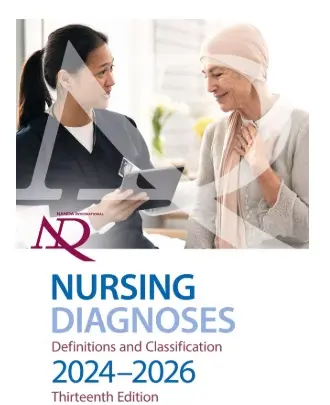

Наразі NANDA International знаходиться у 13-му томі (2024-2026) та має 13 доменів, 48 класів та 277 сестринських діагнозів: 46 видалено з попередніх версій та 98 назв змінено порівняно з попередніми версіями.

Зображення з книги NANDA International 2024-2025.
Бібліографічне
посилання:
Міжнародна організація NANDA. (2018).Медсестринські діагнози NANDA-I: визначення
та класифікація 2018-2020. (11-те видання). Тім. Доступно за адресою:https://nanda.org/